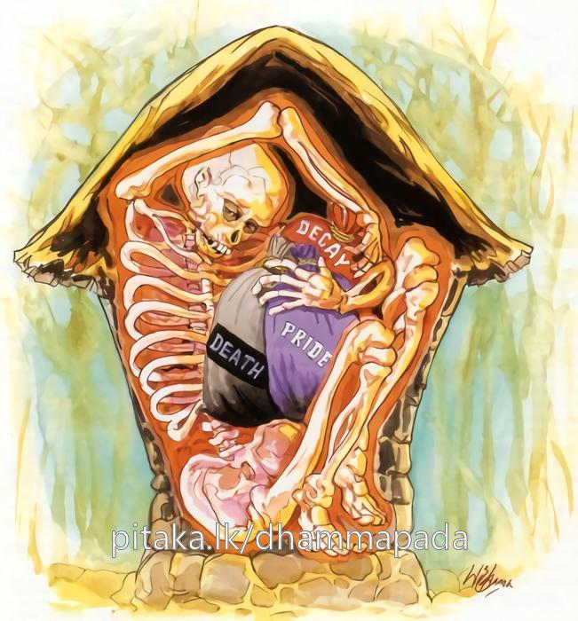

11-5 රූපනන්දා තෙරණියගේ කථා පුවත.
මෙම කතාව සද්ධර්ම සාගරයෙන් ද කියවන්න.
අට්ඨීනං නගරං කතං මංසලොහිතලෙපනං
යත්ථ ජරා ච මච්චු ච මානො මක්ඛො ච ඔහිතො.
යම් තැනෙක්හි ස්කන්ධපරිපාකලක්ෂණ වූ ජරා ද, ස්කන්ධභේදලක්ෂණ වූ මරණ ද, නවවිධ මානය ද, (මෙරමා කළ උපකාර මැකීම ලකුණු කොටැති) මකු කෙලෙස් ද පිහිටුවන ලද ද, එහි මසින් හා ලෙහෙයෙන් ගල්වන ලද නුවරක් (නොහොත් කොටුගෙයක්) ඈටින් කරණ ලදී. (තුන් සියයක් ඇට පිහිටුවා නව සියයක් නහරවැලින් වෙළා කරණ ලදී).

“අට්ඨිනං නගරං කතං” යන මෙම ධර්ම දේශනය ශාස්තෲන් වහන්සේ දෙව්රම් වෙහෙර වැඩසිටිය දී ජනපද කල්යාණීනම් වූ රූප නන්දා තෙරණිය නිමිති කරගෙන දේශනා කළහ.
ඕ එක්දිනක් මගේ වැඩිමහළු සහෝදරයා රජ සිරි සැප අත්හැර පැවිදි වී ලොව ශ්රේෂ්ඨ පුද්ගල වූ බුදුබවට පත්වූහ. උන්වහන්සේගේ පුත් රාහුලද පැවිදි විය. මගේ ස්වාමියා ද පැවිදි විය. මගේ මව ද පැවිදි වුවාය. මෙපමණ ඤාතීන් පැවිදි වී සිටියදි මම ගිහිවැ සිට කුමක් කරම්ද, පැවිදි වන්නෙමියි සිතුවාය. මෙලෙස සිතා භික්ෂුණී අරමට ගොස් පැවිදි වුවාය. පැවිදි වුයේ තනිවූ නිසා මිස ශ්රද්ධාවෙන් නොවේ.
ශෝභාවත් රූපය නිසා ඇය රූපනන්දා නමින් ප්රසිද්ධ වුවාය. බුදුරජාණන් වහන්සේ රූපය අනිත්යය දුකය. අනාත්ම යයි යනුවෙන් දේශනා කරතියි අසා ඇය මෙබදු දර්ශනීය වූ ප්රසාදජනක වූ මගේ රූපයේද දොස් කියන්නේ යයි බුදුන් හමුවට නොයන්නීය. සැවැත් නුවරවාසීහු උදේම දන් දී පෙහෙවස් සමාදන්ව සුදුවත් උතුරු සළුකොට භික්ෂුණි සංඝයාද සුවඳ මල් ආදිය ගත් අත් ඇතිව සවස දෙව්රමට එකතු වී ධර්මය අසති. භික්ෂුණි සංඝයාද බුදුන්ගේ ධර්මය අසනු කැමතිව විහාරයට ගොස් බණ අසති. බණ අසා නගරයට ඇතුල් වන්නේ බුදුගුණ කියමීන්ම ඇතුළු වෙති. ලොව වෙසෙන සතුන්ගෙන් හතරෙන් එකෙන් ස්වල්ප දෙනෙක්ම බුදුන් දැක සතුටු නොවෙති. රූපය ප්රමාණය කොට ඇති බුදුරජාණන් වහන්සේගේ අසූ අනු ව්යඤ්ඡන ලක්ෂණයන්ගෙන් යුතුවු රන්වන් වූ ශරීරය දැක. පැහැදෙති. හඩම ප්රමාණය කරගත් අය නොයෙක් ජාති සියගණනක් නිසා පවතින බුදුන්ගේ ගුණ ඝෝෂාව කරුණු අටකින් සමන්විත ධර්ම දේශනා ඝෝෂාවද අසා පැහැදෙති
රළු බවට පැහැදෙන්නෝ චීවර ආදී රළු දේ දැක පැහැදෙති. ධර්ම ප්රමාණයෙන් පැහැදෙන්නෝ දශබලධාරීන් වහන්ගේ සීලය මෙබඳුය සමාධිය මෙබඳුය. ප්රඥාව මෙබඳුය. භාග්යවතුන් වහන්සේගේ සීලාදී ගුණ වශයෙන් අසමසමය, ඒහා සමාන වෙනත් අයකු නැත්තේය ආදී වශයෙන්, ඔවුන්ගේ මුව නොසෑහෙන තරම් බුදුගුණ කියති.
රූපනන්දා - භික්ෂුණීන්ගෙන් මෙන්ම උපාසිකා වන්ගෙන් ද බුදුගුණ අසා මෙසේ සිතුවාය.
මගේ සොහොයුරාගේ ගුණ කථනය අතිශයෙන් සිදුවෙයි. එක දිනක් හෝ මගේ රූපයේ දොස් කීමෙන් කුමක් වේද? යම් සේ භික්ෂුණින් සමග ගොස් මම නොපෙනෙන ලෙසට ශාලාවට ඇතුළු වී ධර්මය අසා එන්නෙමියි සිතා ඇය - මමද අද එන්නෙමියි බණ අසන්නට යන්නෙමියි භික්ෂුණීන්ට දැනුම් දුන්නාය. භික්ෂුනීන් වහන්සේලා මෙසේ සිතූහ. බොහෝ කලකින් රූපනන්දා බුදුන්ට උවටැන් කිරීමට යනු කැමැත්තී වුවාය. බුදුරජාණන් වහන්සේ අද ඇය වෙනුවෙන් කවරාකාර ධර්මයක් දේශනා කරන්නැයි එය කෙතරම් ඇයට ගැළපෙන්නේදැයි සිතා ගියහ. බුදුන් වහන්සේ ද ඇය රූපය පිළිබඳව ඇති බලවත් ස්නේහය කටුවෙන් කටුවක් ගලවන්නාසේම රූපයෙන්ම රූපය පිළිබඳ මදය රූපයෙන්ම නැති කරනු ඇතැයි සනිටුහන් කරගෙන විහාරයට වැඩම කළහ. ඇය විහාරයට පිවිසෙන අවස්ථාවේ දී එක් සොළොස් වියැති අභිරූපි යුවතියක් රතුපාට වස්ත්රයක් හැඳ පෙරවා සියළු අලංකාර අභරණවලින් සැරසී විජිනි පතක් ගෙන බුදුන් වෙතම සිට පවන් සලන ස්වරූපයක් සෘද්ධි බලයෙන් මවා බුදුන්ට ද රූපනන්දාට ද පෙනෙන සේ දැක්වූහ. රූපනන්දා භික්ෂුණීන් සමග විහාරයට ඇතුළුවී භික්ෂුණීන්ගේ පිටුපස සිට පසඟ පිහිටුවා බුදුන් වැඳ' භික්ෂුනීන් වහන්සේලා මැදට වී සිටියාය. එලෙස සිටින අතර පාදාන්තයේ සිට බුදුන් බලන්නේ උන්වහන්සේගේ මහාපුරුෂ ලක්ෂණයන්ගෙන් යුත් අනු ව්යඤ්ජනයන්ගෙන් බබළන ව්යාමප්රභාවෙන් වටකරන ලද බුදුන්ගේ සිරුර දැක පුන් සඳක් බඳු ශෝභාවන් මුහුණ බලන්නේ ආසන්නයේ සිටි ස්ත්රී රුපය දුටුවාය. ඇය ඒ ස්ත්රීරුව බලන්නී තමන් ගේ රුව පිළිබඳව සිතන්නේ ඇගේ රුව අනුව තමන් රාජ හංසියක ඉදිරියේ කෙවිඩක සේ තමන්ටම අවමානයක් ඇතිවිය.
ඍද්ධියෙන් මවන ලද රූපය දුටුතැන් සිට මාගේ ඇහිබැම හා ඇස් සැලුනි. ඇය මෙසේ සිතුවාය අහෝ මැගේ කෙස් ශෝභනය නළල් තලය ශෝභාමත්ය. මුළු සිරුරේ ශෝභාමත්බව රූසිරින් අඳනා ලද සිත නිසා ඇගේ රුව කෙරෙහි බලවත් බැඳීමක් ඇතිවිය. බුදුහු ඇගේ බලවත් ඇල්ම දැනගෙන ධර්ම දේශනය කරමින්ම ඇගේ රුව සොළොස්විය ඉක්මවා විසිවයස් බවට පත්කළහ. දැන් මේ රුව මුලින් තිබු තරම්ම නැත. ටිකක් වෙනස් වූයේ යයි සිතුවාය. බුදුහු අනුපිළිවෙලින් එම ස්ත්රීයගේ රූපය වෙනස්කොට මධ්යම වයසේ කෙනෙකුගේ රූප ස්වභාවයෙන් පසුව ජරාජීර්ණ මැහැලි ස්ත්රියකගේ ස්වභාවයෙන් ද දැක්වීය. ඇය ද අනුපිළිවෙලින් මෙය අන්ත රහිතය. දිරාගිය කල එය නොඇලෙන්නේ වැටුන දත් ඇති පැසුන කෙස් ඇති නැවුන අත්පා ඇතිව සැරයටියට බරවී වෙවුලන සිරුරකින් යුතුව පෙනුම දැක අතිශයින් කළකිරුණි. අනතුරුව බුදුහු රෝගයෙන් පෙළෙන තැනැත්තියක ලෙසට දැක්වුහ.
ඇය එකෙනෙහිම සැරයටිය ද තල් අත්ත ද විසිකර මහ හඬින් විලාප දෙමින් බිම පතිත වී තමන්ගේම මළ මුත්රවල ගැලී ඒ මේ අත පෙරලුනි. මෙය බලා සිටින රූපනන්දා බලවත් කළකිරීමට පත්වූවාය. බුදුහු ඇය මියගිය අයුරු මවා පෙන්නුහ. ඇය එකෙනෙහිම ඉදිමී ගිය බවටත් නව දොරින් කුණු සැරව වැගිරෙන අයුරු දැක්වුණි. කවුඩු ආදින් පැමිණ සිරුර සිදුරු කර කඩා දැමුහ. රූපනන්දා ද එයබලා මෙම ස්ත්රිය මෙතැනදීම ජරා - ව්යාධි - මරණ තත්ත්වයට පත්වූවාය. මටද මේ ආත්මභාවයේදීම මේ ජරා ව්යාධි මරණ එන්නේය. මෙසේ තමා පිළිබඳව අනිත්යතාව බැලුවාය මෙලෙස අනිත්යතාව බැලීම යනු දුක් වශයෙන් ද අනාත්ම වශයෙන් ද සැලකීමක් වේ. ඉක්බිති ඇගේ තුන් භවය දැල්වී ගියාක් බඳුවිය. ගිහිගෙයි වාසය ගෙලබැදි සර්පයෙක් කුණපයක් බඳුවිය. කර්මස්ථානයට අභිමුඛ වූ සිත ඇති විය. බුදුහු ඇයගේ සිත අනිත්යතාවයට නැඹුරුවූ බව දැන ඇයට තමන්ට පිහිට කොට ගතහැකිදැයි බලන්නේ නොහැකි වේ. බාහිර උපකාර ඇයට අවශ්යවේ. දැන ඇයට උපයෝගීවන ධර්මයක් දේශනා කරමින් නන්ද තෙරුන්ට දේශනා කළ කරුණු රූප නන්දාට ඉදිරිපත් කරමින්
ලස්සනට බබළන - මේ කය අපිරිසිදු වේ
අසුචියෙන්, සැරවෙන් -ලෙයින් හා මළ මූයෙන්
දුගඳ හමනා නිතරම - සිරුර තිර නැත නැගනියේ
ධාතු වසයෙන් හා - හිස්වසයෙන් ද බලමින්
බවයෙන් එතෙර වන්නට - සිත යෙදුම කළ යුතු වේ
මේ සිරුර මැනැවැයි - පිළිදගිති අනුවණයෝ
ආතුර වූ අපිරිසිදු වූ - දුගද හමන්නා වූ මේ සිරුර නන්දා බලන්න සැරව වැගිරෙන අපිරිසිදුව, මේ සිරුර අඤාණයෝ ඇළුම් කරති. මෙය යම්සේද එය එසේය. එය එසේ වේ. මේ සිරුර ධාතු වශයෙන්ද හිස් වශයෙන් ද බලන්න - එසේ තේරුම්ගෙන මෙලොවට නැවත නොඑන්න. භවය පිළිබඳව කැමැත්ත දුරුකොට උපශාන්ත වුවක් ලෙස හැසිරෙන්න.
බුදුරජාණන් වහන්සේ නන්දා තෙරණියන්ට මෙම ගාථා පවසා නන්දා තෙරණිය දේශනය අනුව ඤාණය දල්වා සෝවාන් ඵලයට පැමිණිය. අනතුරුව ඇය මත්තෙහි මාර්ග ඵලයන්ට අනතුරුව විදර්ශනා සඳහා කර්මස්ථාන කියන්නට - නන්දාවනි මේ සිරුරේ සාරයක් ඇතැයි නොසිතන්න. අල්පමාත්රයක් හෝ මේ සිරුරේ සාරයක් නැත. ඇටකැබලි තුන්සියයකින් ඔසවන ලද මෙම සිරුර ඇටකැබලි වලින් කරන ලද නගරයත් වන්නැයි කියා මේ ගාථාව පැවසුහ.
නව සියයක් තිබේ සිරුරක මස් වැදැලී
තුන් සියයක්ම එකතුව ඇත ඇට කැබලී
ලෙඩබව මහළු බව මරණය ඇත බැදිලි
මෙය නුවරක්ය හුදු විදුලියකින් බැබලී.
එහි අර්ථය ගෙයක් නගරයක් කැමති අයෙක් ලී දඬු ඔසවා පරාල බැඳ මැටි ඔබා නගර සංඛ්යාත වු බැහැරින් ගෙයක් කරන්නේය. එසේම ඇතුළත ඇට තුන්සියයක් ඔසවා. ඒවා නහරවලින් බැඳ තබා මස්, ලේ තවරා සමකින් වසා දිරණ ස්වභාවයෙන්, ජරාවට පත්වන භාවයෙන් මරණභාවයෙන් මාරයා විසින් ගන්නා ලද මේ සිරුර පිළිබඳව ආරෝග්ය නිසාද, රූපවත් බව නිසාද යහපතකැයි සිතා මානය ඇති කිරීම නගරකෙතං මෙබඳු වූ මේ රූපයේ ගත යුතු කිසිවක් නැත කායික චෛතසික ආබාධ වලින් ඔසවන මේ ශරීරයේ ගත යුතු කිසිවක් නැත.
දේශනාවසානයේ නන්දා තෙරණිය අර්හත් ඵලයට පැමිණියාය. මහාජනයාටද දේශනාව සාර්ථක දේශනයක් වූයේය.